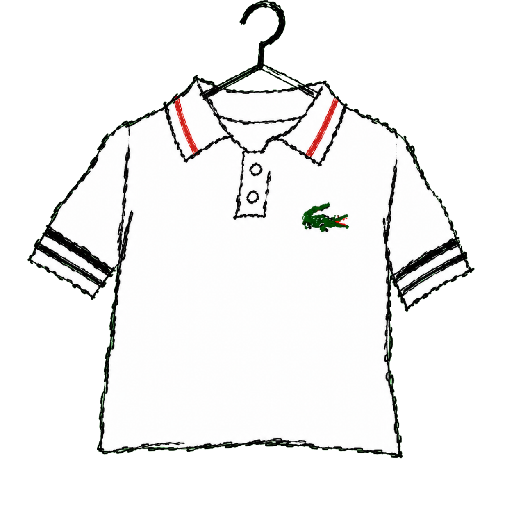
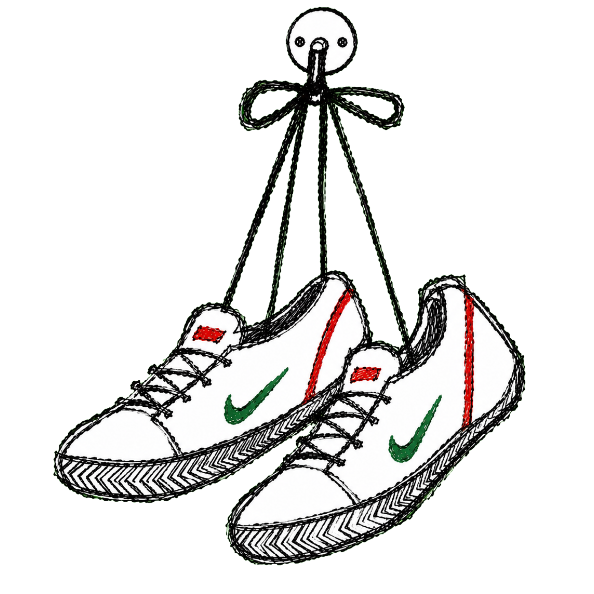
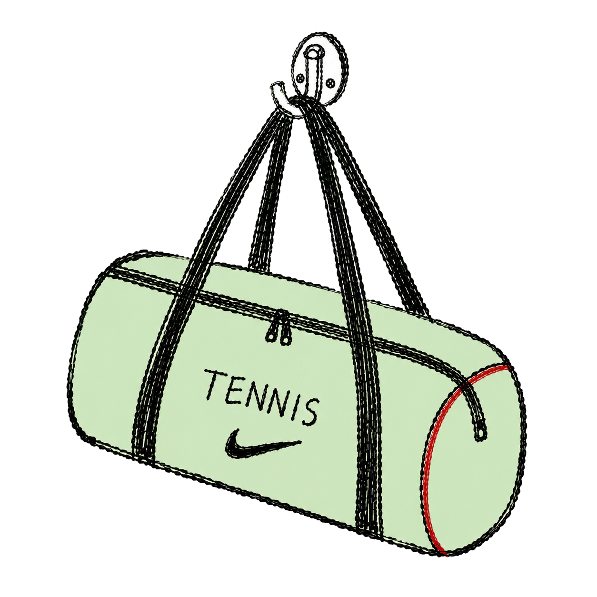
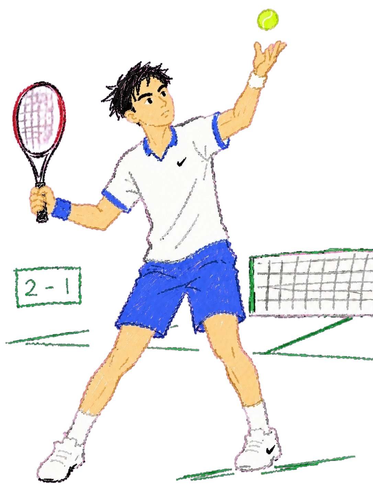

冠军之外：
网球小孩的 1 种人生
一个孩子，一把球拍，和一段人生。
这是一个关于网球的成长模拟。
在接下来的日子里，你会遇到许多分岔路。
每天的训练、学业的取舍、日常的琐碎……这些看似寻常的决定，会慢慢推着他走向不同的终点。
这里没有标准答案，只是不同的人生。
你准备好了吗？
你呱呱落地，你是——
你选择了一项很早就开始认真讨论"公平"的运动。
你或许不知道，网球是大满贯赛事中最早实现男女同工同酬的主流运动。
1968年，温网男单冠军奖金还是￡2,000，而女单冠军仅有￡750，不足前者四成。
此后，四大满贯陆续推进奖金平等。
从1972年美网率先破局，到2007年温网完成改革，网球用了35年，让男女选手站上同一条奖金线。
一颗球，就是一次被记住的突破。
从 2004 到 2024，中国网球在大满贯舞台上的每一步，都可以被看见。
成绩开始波动，球场和课本都在拉扯你。
从出生地一路走到这里，真正困难的决定才刚刚开始。
你接受了网球用品总裁的晚餐邀请。
那一晚，他没有只和你聊比赛，
而是聊起了网球之外的另一片赛场：
球拍、球鞋、运动服、网球裙……
这些曾经只是比赛装备的东西，
正在成为年轻人日常生活里的时尚符号。
你意识到，
职业网球带来的不只是奖杯和奖金，
还有被看见之后产生的商业影响力。
你决定开一家属于自己的网球用品店。
而时代的蓝海，正好向你打开。
越来越多人开始走进球场，
也越来越多人开始购买属于自己的第一件网球装备。



网球产业的增长轨迹
三组数据，一张手绘曲线图。点击导航切换视角。
你在国内赛事体系中打了三年球，
成为了一名优秀的本土职业球员。
但你也渐渐明白，
真正能站上聚光灯中央的人，毕竟只是少数。
随着年纪渐长，
伤病开始一次次打断你的训练和比赛。
你不得不停下来思考：
如果有一天，自己不能再靠打比赛生活，
那未来的路，又该走向哪里？

随着郑钦文夺冠，
国内掀起了一股网球热。
网球不再只是小众运动，
越来越多的人开始走进球场、学习网球。
网球市场也随之不断扩大，
到 2024 年已达到 367.5 亿元。
你渐渐发现，即使离开职业赛场，
也并不意味着离开网球。
你依然可以靠这项热爱的运动谋生，
在球场之外，
找到属于自己的新位置。
"也许不是每个孩子都能成为郑钦文， 但今天的中国网球，至少让这场梦想不再只有一种终点。 更多孩子终于能从一把球拍里， 走向不同但真实的人生。"
"也许不是每个孩子都能成为郑钦文， 但今天的中国网球，至少让这场梦想不再只有一种终点。 更多孩子终于能从一把球拍里， 走向不同但真实的人生。"